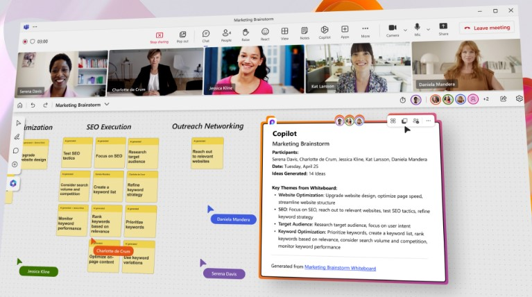
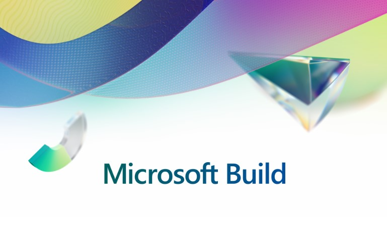
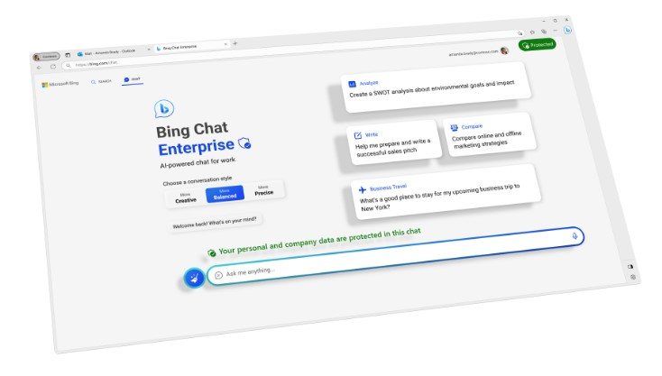

Introducing the Microsoft 365 Copilot Early Access Program and 2023 Microsoft Work Trend Index
May 9, 2023|Jared Spataro

In March, we introduced the world to Microsoft 365 Copilot – your copilot for work. We’re excited to share the next step in our journey as we bring Copilot to more customers and introduce new capabilities. We’re also releasing new data and insights from our 2023 Work Trend Index on how work is changing in the era of AI.
Microsoft 365 Copilot Early Access Program
Since March, we’ve been testing Copilot with 20 enterprise customers, learning alongside companies like Chevron, Goodyear, General Motors and Dow. Their overwhelming feedback is that Copilot has the potential to revolutionize work. They point to how it is a game changer for meetings and is beginning to transform the way they create. And, they’ve identified areas where we can do more to help people adapt to this new way of working, like the need for more conversational, multi-turn interactions. As we bring Copilot to more customers, we’ll continue to rely on this kind of feedback to refine Copilot and help guide users as they adapt to this new way of working.
Microsoft Build brings AI tools to the forefront for developers
May 23, 2023|Frank X. Shaw

You only need two simple letters to accurately convey the major shift in the technology space this year: A and I. Beyond those letters, however, is a complex, evolving and exciting way in which we work, communicate and collaborate. As you will see, artificial intelligence is a common thread as we embark on Microsoft Build, our annual flagship event for developers.
Developers can now extend Microsoft 365 Copilot with plugins
Plugins for Microsoft 365 Copilot include ChatGPT and Bing plugins, as well as Teams message extensions and Power Platform connectors – enabling developers to leverage their existing investments. And developers will be able to easily build new plugins for Microsoft 365 Copilot with the Microsoft Teams Toolkit for Visual Studio Code and Visual Studio. Developers can also extend Microsoft 365 Copilot by bringing their data into the Microsoft Graph, contextualizing relevant and actionable information with the recently announced Semantic Index for Copilot.
Building a quantum-safe future
May 31, 2023|Charlie Bell
As innovation has progressed through radio, the internet, Wi-Fi, smartphones, and the Internet of Things, we have consistently faced security concerns with each technological milestone. Every new and disruptive technology comes with both opportunities and challenges.
How quantum computing could upend encryption
The strength of current cryptographic systems lies in the complexity of certain mathematical problems, one of which involves finding the factor of extraordinarily large numbers — a task that would take traditional computers millions of years to solve. This is the core principle behind the RSA algorithm that’s been in use since the 1970s. Systems using RSA today range from hardware devices such as smart cards and routers, to software applications such as web browsers and email clients. RSA is also used throughout the supply chain of these systems, from the manufacturing of components to the distribution of software updates.
Cloud-based chip design for national security achieves key milestone
May 9, 2023|Jason Zander
Continued U.S. leadership in emerging technology requires a sustainable supply of advanced chips to power innovation from artificial intelligence to quantum computing. The CHIPS and Science Act, passed last year, aims to boost domestic research and manufacturing capacity for critical microelectronics. To support this ambitious effort, the U.S. Department of Defense (DoD) launched the Rapid Assured Microelectronics Prototypes (RAMP) using Advanced Commercial Capabilities program, an effort to accelerate the secure, sustainable development of microelectronics for defense technologies.
As part of this effort, three new state-of-the-art chips were developed using the RAMP secure design capability developed by Microsoft within the Azure Government cloud environment to ensure compliance with DoD supply chain requirements. This achievement is a key milestone that marks the first time such chips were designed in the cloud and transmitted via the cloud to chip foundries for manufacture. This process rapidly accelerates the time to market for critical microelectronic components and represents a significant milestone in secure cloud-based microelectronic design and manufacturing. It is also extendable to the commercial design environment in Azure, accelerating the goals of the CHIPS Act to enable a sustainable domestic supply chain for semiconductors.
Furthering our AI ambitions – Announcing Bing Chat Enterprise and Microsoft 365 Copilot pricing
Jul 18, 2023| Yusuf Mehdi

At Microsoft, we are working to provide a copilot for every person in their lives and at work. Earlier this year, we introduced the new AI-powered Bing, your copilot for the web, fundamentally reinventing search as a category with complete answers, a full chat experience, and features to unlock creativity. We also introduced Microsoft 365 Copilot, which combines the power of large language models (LLMs) with your data in the Microsoft Graph and Microsoft 365 apps to usher in a whole new way of working, using just your own words. Since then, we’ve seen millions of people incorporate Bing into their lives for the first time in new ways to unlock their creativity and gain a better understanding of the world.
Bing Chat Enterprise — AI-powered chat for work
Bing Chat Enterprise gives your organization AI-powered chat for work with commercial data protection. With Bing Chat Enterprise, user and business data are protected and will not leak outside the organization. What goes in — and comes out — remains protected. Chat data is not saved, and Microsoft has no eyes-on access – which means no one can view your data.